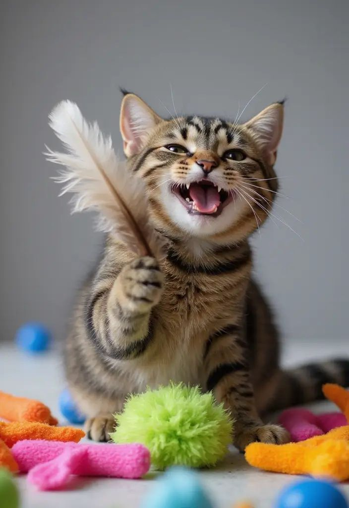
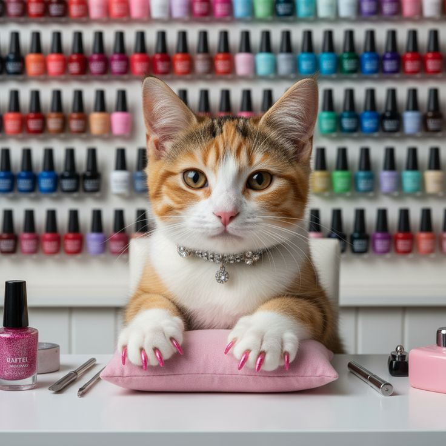
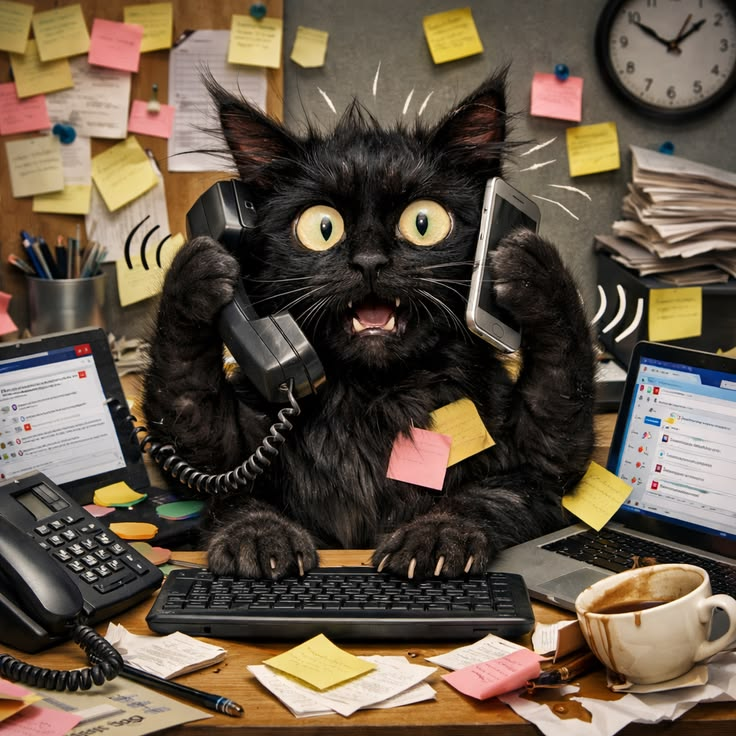
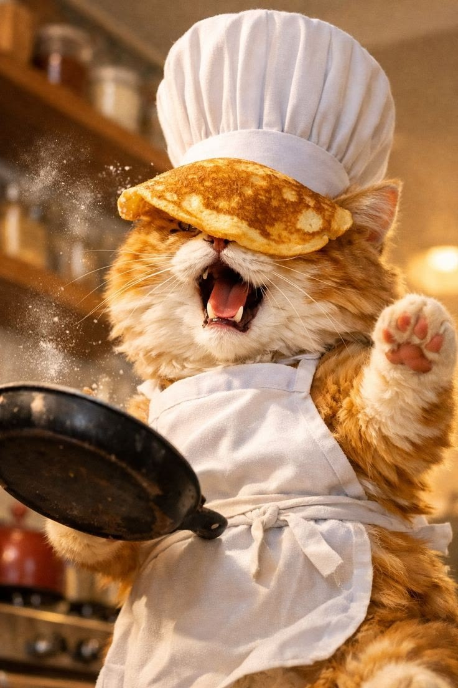

Les Ateliers du Repaire
Apprendre, créer, se détendre, s'entraider. Quatre façons de changer la vie (la vôtre et celle de nos moustachus).
Les ateliers sont au cœur de notre mission. Une adhésion annuelle à 5€ vous ouvre les portes. Ensuite, participez comme bon vous semble, au prix que vous décidez (prix libre). Ensemble, nous créons un espace de solidarité où chacun donne ce qu'il peut.

Création de Jouets Écolos 🧶
Récupérez, transformez, créez ! Fabriquez des jouets stimulants pour vos futurs compagnons ou pour nos pensionnaires, à partir de matériaux recyclés. Pendant que vos mains s'activent, Velours, Biscuit et Moonlight vous observent avec leur curiosité légendaire. Créativité garantie, fou rire inclus.
S'inscrire

Bien-être & Ronronthérapie 💅
Votre semaine vous a épuisé ? Les ronrons du Repaire sont votre remède. Soin, manucure, détente sous les caresses félines de nos moustachus... Laissez le stress s'envoler dans les vapeurs apaisantes de ce rituel de self-care. Moonlight est expert en thérapie par câlins.
Prendre du temps pour moi

Café Administratif 📝
L'administratif vous terrifie ? Pas de panique ! Autour d'un bon café rétro et sous les encouragements silencieux de Biscuit, nos bénévoles démystifient les papiers. Pas de jugement, juste de la solidarité. Le formulaire n'a jamais été aussi inoffensif.
Voir les dates

Les Pâtisseries du Diner 🧁
Plongez dans l'univers gourmand des années 50 ! Nos animatrices vous enseignent les secrets des cupcakes mythiques, des brownies décadents et des cookies qui collent au palais. Vous repartirez avec vos créations (si la tentation de les dévorer sur place ne vous gagne pas).
Mettre la main à la pâte